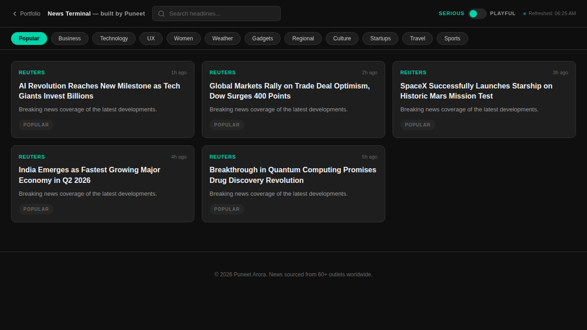
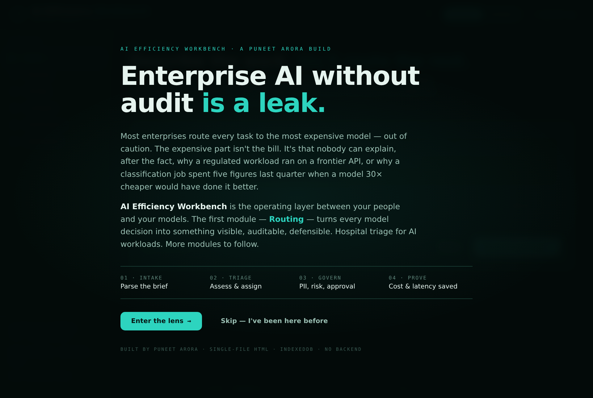
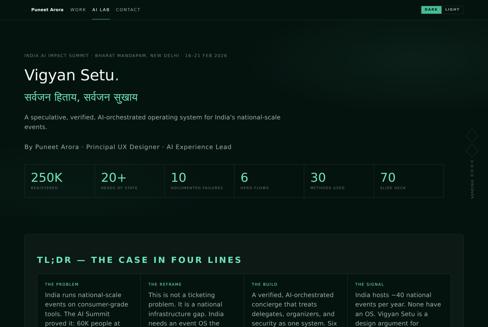
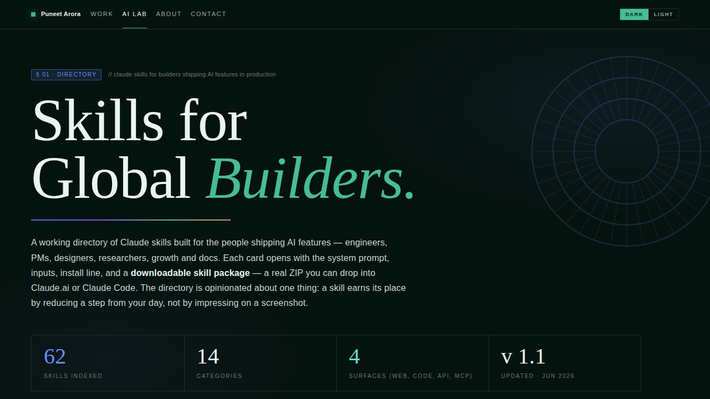

Learn the craft. Build it efficiently. Earn trust.
A working lab, not a portfolio — every live tool, prototype, framework, and piece of knowledge in one filterable content graph. Browse it yourself, or let the AI Navigator find your next step by role, goal, and time.
Browse the content graph
Filter everything by role, domain, type, maturity, difficulty, and time — across the Learn, Build, and Trust lenses.
Open the graph ↓ Ask AIUse the AI Navigator
Answer three quick questions — who you are, what you need, how much time — and get a curated shortlist.
Ask the Navigator ↓Every live tool, prototype, custom GPT, and guide in one scrollable shelf. Hover a card to flip it for the story, then click through to open the project.

An AI news aggregator with a behavioural signal engine that learns from what you read — 40+ sources across 12 categories, decay-weighted scoring, and always-fresh content on every visit. Pure vanilla JS, zero dependencies.
Open the terminal →
A living digital twin of the global economy for executive decision-making. AI-scored country rankings, four-order-deep geopolitical shock simulations, and real-time strategy extraction that turns macro noise into moves.
Open the simulator →
A WebGL 3D globe rendering satellites, ground stations, and live network links as a real-time defense-ops interface. AI-driven collision sims, telemetry selection, and failure-risk scoring — all rendered client-side.
Enter the room →
Make enterprise AI cost-aware without losing the plot. Triage every workload, route by cost, and send only the 5% that truly needs a human to a human. Governance treated as a UX problem — every decision visible and defensible.
Open the workbench →A live AI-prompt engineering hub for design teams. CO-STAR, RTF, and Chain-of-Thought frameworks operationalised as ready-to-use tools, not theory — vibe-coded and shipped as a working instrument teams use daily.
Visit the portal →
A 70-slide Double Diamond case study for a speculative event OS, born from the documented failures of the India AI Impact Summit. 30 methods, 10 fault lines, 5 personas, and an interactive phone prototype — Discover to Deliver.
Read the case study →A custom GPT encoding 19.7 years of strategic design thinking. It reasons about work, decisions, and impact — an AI portfolio reviewer that critiques like an expert, arguing about outcomes, not just what looks nice.
Open in ChatGPT →A custom GPT that runs AI-driven audits on any interface for trust erosion and dark patterns. Paste a screenshot and get a scored trust audit with actionable findings — ethical guardrails baked into the model.
Open in ChatGPT →
Three tools in one: an AI skills generator, 30 Claude skills built for India’s builders, and 62 for global builders across engineering, product, design, and growth. Generate, copy, share, and download custom skills on the fly.
Open Skills Lab →
A structured, day-by-day playbook for designing agentic AI experiences — from prompt-level fluency to shipping trustworthy autonomous agents. Concepts, hands-on drills, and daily rituals that build real AI-UX craft.
Read the plan →One operator across all three galaxies.
Learn openly, build efficiently, earn trust. See how the three lenses connect — the point of view, the signature essays, and the guided tour — on the full Universe map.